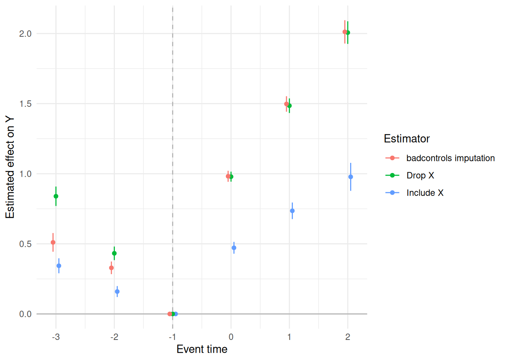

library(badcontrols)
library(ggplot2)
set.seed(123)
sim <- simulate_bad_controls(
n = 2000,
T_max = 4,
groups = 2:4,
dgp = "dgp1",
beta_drift = 0
)
head(sim$data)
#> id period G D Y X Z W
#> 1 1 1 0 0 -0.7782891 -0.3266920 -0.5604756 -0.5381157
#> 2 1 2 0 0 0.6162895 0.3567673 -0.5604756 -0.5381157
#> 3 1 3 0 0 0.3039487 0.0787823 -0.5604756 -0.5381157
#> 4 1 4 0 0 -0.5515761 -0.3436366 -0.5604756 -0.5381157
#> 5 2 1 4 0 0.5169489 0.5687958 -0.2301775 0.2505197
#> 6 2 2 4 0 0.6478185 0.4791641 -0.2301775 0.2505197Difference-in-Differences with Bad Controls: A Coding Example
Source:vignettes/bad-controls-coding.qmd
This vignette shows the main workflow using simulated staggered-treatment data. The data-generating process is the linear DGP 1 described in the paper. X is the time-varying bad control, Y is the outcome, and Z and W are time-invariant covariates.
Simulated data
In DGP 1, the untreated evolution of the bad control depends on its lag, W, and Z. This determines the covariates used in the bad-control event study below.
Event study for the bad control
We first estimate an event study for X itself. Because X is the outcome in this exercise, we set d_outcome = FALSE: the estimator works with the level of X rather than a change in X. The specification includes the lagged bad control, W, and Z, matching the DGP 1 evolution equation.
x_event_study <- ptetools::pte_default(
yname = "X",
gname = "G",
tname = "period",
idname = "id",
data = sim$data,
xformula = ~X + W + Z,
d_outcome = FALSE,
d_covs_formula = ~-1,
est_method = "reg",
control_group = "notyettreated",
base_period = "universal",
bstrap = FALSE,
cband = FALSE
)
bad_control_event_study <- data.frame(
event_time = x_event_study$event_study$egt,
estimate = x_event_study$event_study$att.egt,
se = x_event_study$event_study$se.egt
)
bad_control_event_study
#> event_time estimate se
#> 1 -3 0.1367879 0.01894161
#> 2 -2 0.1288322 0.01179028
#> 3 -1 0.0000000 NA
#> 4 0 0.4937464 0.01202674
#> 5 1 0.7399519 0.01862408
#> 6 2 0.9833666 0.02780254Three outcome estimators
We now estimate effects on Y in three ways:
-
Include the bad control: use the observed post-treatment
Xas a covariate. -
Drop the bad control: use only
Zas a covariate. -
Use
badcontrols: recover the untreated version ofXusingWandZ, then use it in the outcome comparison.
The first two specifications use ptetools::pte_default(). The third uses badcontrols::didbc() with the imputation estimator. All three use the same staggered-treatment setup and suppress the bootstrap so that the example runs quickly.
pte_args <- list(
yname = "Y",
gname = "G",
tname = "period",
idname = "id",
data = sim$data,
est_method = "reg",
control_group = "notyettreated",
base_period = "universal",
bstrap = FALSE,
cband = FALSE
)
include_bad_control <- do.call(
ptetools::pte_default,
c(pte_args, list(
xformula = ~Z + X,
d_covs_formula = ~X,
d_outcome = TRUE
))
)
drop_bad_control <- do.call(
ptetools::pte_default,
c(pte_args, list(
xformula = ~Z,
d_covs_formula = ~-1,
d_outcome = TRUE
))
)
badcontrols_imputation <- didbc(
yname = "Y",
gname = "G",
tname = "period",
idname = "id",
data = sim$data,
bad_control_formula = ~X,
bad_control_cov_formula = ~W,
xformula = ~Z,
est_method = "imputation",
control_group = "notyettreated",
base_period = "universal",
bstrap = FALSE,
cband = FALSE
)The following plot compares the event-study estimates. Event time -1 is normalized to zero by the universal-base-period convention.
event_study_data <- function(result, estimator) {
data.frame(
event_time = result$event_study$egt,
estimate = result$event_study$att.egt,
se = result$event_study$se.egt,
estimator = estimator
)
}
outcome_event_studies <- rbind(
event_study_data(include_bad_control, "Include X"),
event_study_data(drop_bad_control, "Drop X"),
event_study_data(badcontrols_imputation, "badcontrols imputation")
)
ggplot(outcome_event_studies, aes(event_time, estimate, colour = estimator)) +
geom_hline(yintercept = 0, colour = "grey70") +
geom_vline(xintercept = -1, linetype = "dashed", colour = "grey70") +
geom_point(position = position_dodge(width = 0.15)) +
geom_errorbar(
aes(ymin = estimate - 1.96 * se, ymax = estimate + 1.96 * se),
width = 0,
position = position_dodge(width = 0.15),
na.rm = TRUE
) +
labs(
x = "Event time",
y = "Estimated effect on Y",
colour = "Estimator"
) +
theme_minimal()
The conceptual motivation for these comparisons is discussed in the conceptual vignette. The package also provides parametric doubly robust and machine-learning estimators for the covariate-unconfoundedness approach.